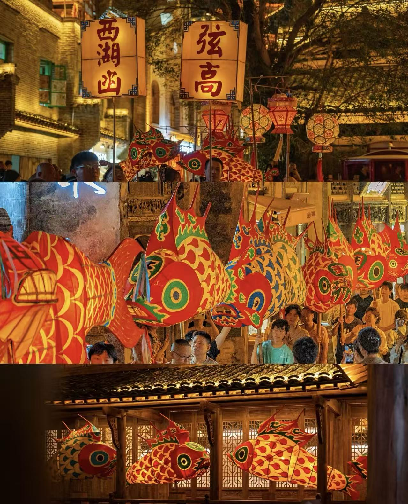
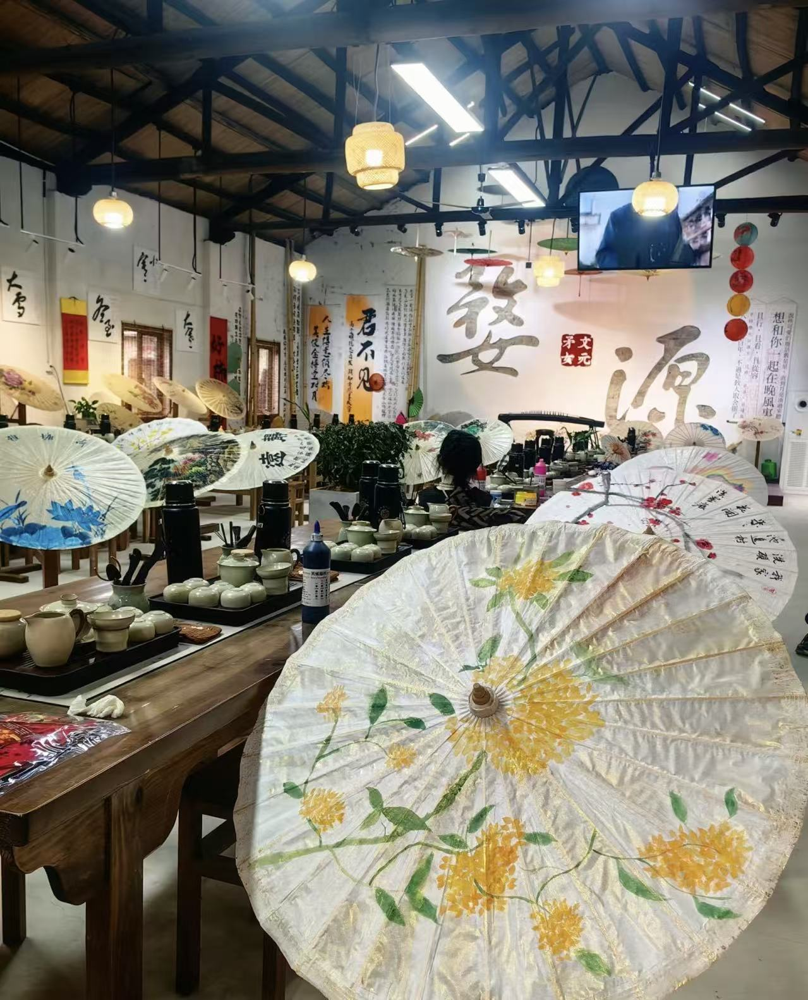
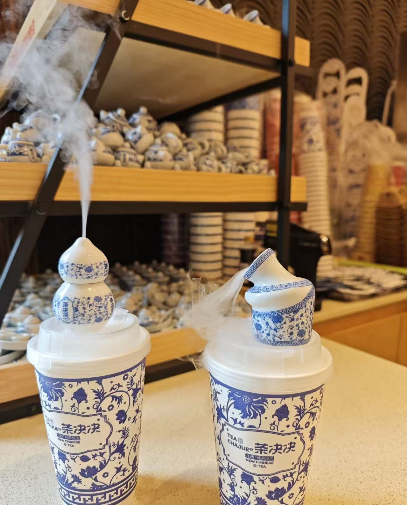

Wuyuan · Distinctive Cultural and Creative Products
A thousand years of craftsmanship condensed in a small space
Each
item is a microcosm of Wuyuan culture.
A perfect fusion of traditional craftsmanship and modern aesthetics, a Wuyuan imprint worth treasuring.

🏮 Intangible cultural heritageWuyuan fish lanterns are a provincial-level intangible cultural heritage of Jiangxi Province, originating in the Tang Dynasty and boasting a history of over a thousand years. They are made with bamboo strips as a frame, covered with colored paper, and painted with auspicious patterns such as carp and goldfish. Inside, candles flicker, illuminating the lanterns at night, symbolizing "abundance year after year." During the Lantern Festival, villagers carry these fish lanterns, parading through the streets and alleys, their movement resembling dragons playing in the water, creating a magnificent spectacle.

☂️ Ancient charm and craftsmanshipWuyuan Jialu oil-paper umbrellas, renowned as "the finest paper umbrellas under heaven," are a national intangible cultural heritage. They are made from the finest bamboo ribs, coated with natural tung oil onto high-quality paper, and meticulously crafted through dozens of processes including bamboo shaving, steaming, assembly, paper pasting, painting, and oiling. The umbrella surfaces are often painted with Hui-style landscapes, flowers, birds, insects, and fish, making them not only practical tools for sheltering from wind and rain but also works of art that embody a thousand years of culture.

🍵 Tea Country FlavorWuyuan has been a "tea town" since ancient times, as recorded in Lu Yu's "The Classic of Tea" from the Tang Dynasty. Wuyuan green tea is renowned for its "naturally green color, fragrant and rich taste, and clear and mellow liquor," earning it the reputation as the core production area of the "Golden Triangle of Chinese Green Tea." Today, local tea companies use high-mountain organic tea leaves as raw materials and integrate modern technology to launch a series of beverages, including bottled cold-brewed tea, tea-flavored sparkling water, and osmanthus green tea, allowing tourists to enjoy the refreshing tea flavor of Wuyuan's mountains anytime, anywhere.
Cultural and creative product shops are set up in major scenic areas such as Huangling, Jiangling, and Likeng, where you can purchase authentic Wuyuan souvenirs on-site.
Search for "Wuyuan cultural and creative products" or "Jialu oil-paper umbrellas" on major e-commerce platforms; free shipping nationwide is available.
Step into the studio of an intangible cultural heritage inheritor, experience the production process firsthand, and customize your own souvenir.